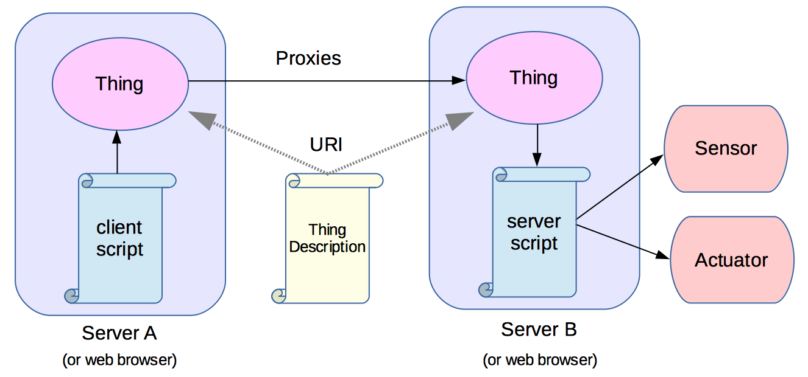
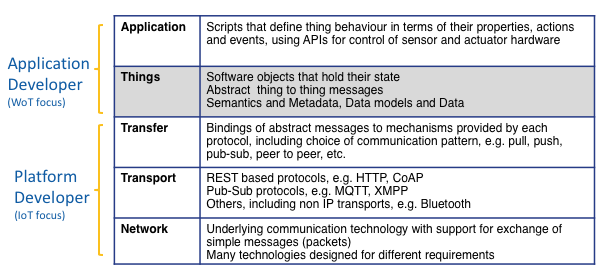

Web of Things Working Group Charter
Comments are welcome on the Web of Things Interest Group public email list, and you are encouraged to file issues on github, but please use the label "[wot]". The github URL for this document is https://github.com/w3c/charter-drafts/blob/gh-pages/wot-wg-2016.html.
The mission of the Web of Things Working Group is to counter the fragmentation of the Internet of Things by introducing a Web based abstraction layer spanning existing IoT platforms and standards. We seek to reduce costs through the global reach of Web standards, to enable open markets of services, and to unleash the power of the network effect.
| Start date | [dd monthname yyyy] (date of the "Call for Participation", when the charter is approved) |
|---|---|
| End date | [dd monthname yyyy] |
| Chairs | [chair name] |
| Team Contacts | Dave Raggett, (0.2 FTE), Kazuyuki Ashimura (0.1 FTE), Yingying Chen (0.1 FTE) |
| Meeting Schedule |
Teleconferences: Weekly with additional topic specific calls as appropriate. Face-to-face: we will meet during the W3C's annual Technical Plenary week; additional face-to-face meetings may be scheduled by consent of the participants, with no more than 4 face to face meetings in total per year. |
Introduction
Brief background of landscape, technology, and relationship to the Web, users, developers, implementers, and industry.
There is broad agreement about the huge potential for services for the Internet of Things (IoT), but this is being held back by fragmentation across many platforms, standards and a rapid evolution of the low level IoT technologies themselves. This Working Group will define inter-platform standards that simplify application development and enable interoperability across a broad range of platforms and associated standards. The starting point is the idea of things that stand for physical or abstract entities, whether connected or not. These can be exposed to applications by software objects with data models describing the object’s properties, actions and events. These software objects can represent local things, e.g. for sensors and actuators attached to the same device as an application script, or remote things, where the object acts as a proxy for a software object on another device.
The approach is based upon the fundamentals of Web architecture:
- URIs for identifying things
- A variety of protocols for accessing things, since no one protocol will be appropriate in all contexts
- Linked Data for describing things as a basis for interoperability and discovery, playing an analogous role to HTML for web pages
URIs can be used to access machine interpretable descriptions of things. These descriptions enable the automatic generation of scriptable objects, whose properties, actions and events correspond to those of the thing the object stands for. An object on one server can act as a proxy for an object on another server. Application developers are shielded from the implementation details of how objects are coupled, allowing platform developers to choose the transport protocols and communication patterns best suited to the context. Servers can be provided at a wide range of scales from microcontrollers to cloud-based server farms. Web page scripts can create local proxies for things, or even host things themselves, subject to the protocols supported by Web browsers and the single origin security policy.

Note: this illustrates the concepts, but is not intended as an architecture diagram.
The above figure shows a thing on server A that acts as a proxy for a thing on server B which is coupled to a sensor and actuator. The proxy on server A could be set up by a script on that server, or by a script on server B. The latter is useful when server A is on the public Internet and server B is behind a firewall, and you want to provide public access to the thing from server A.
Note: for a description of potential architectures, see Web of Things Architecture update.
The following diagram shows how the abstraction layer for "things" fits into the communications stack.

This Working Group will define Web technology standards to enable services that span different IoT platforms and standards, with a view to countering fragmentation, and enabling a global market of services and associated software tools. This is expected to drive down the costs and risks involved in developing services, and help realise the full potential for the IoT. In short, we seek to extend the Web from a Web of pages to a Web of things.
There are many possible applications across a wide range of domains, e.g. homes, offices, healthcare, cities, electrical grids, retail and manufacturing. The key to realizing the Web of Things is the metadata that provides the basis for semantic interoperability. This Working Group will focus on the metadata vocabularies that are useful across a broad range of application domains. In addition, we plan work on scripting APIs exposed to application developers, and bindings to common platforms and protocols in collaboration with the standards development organizations responsible for these.
Security is a major concern for the IoT. The Web of Things Working Group will seek to enable end to end security across IoT platforms. This will require security metadata as a basis for one platform to identify how to securely interoperate with another. The Working Group will also address application focusing APIs for cross platform security frameworks.
Scope
Issue: Privacy is a major concern for end users as the IoT greatly increases the amount of personal information that can be collected by service providers. We need to address privacy in some way, but how? One idea is to state that this is an area for study by the Interest Group and that this is expected to lead to new standardisation track work items.
Scope Summary
Standards for enabling interoperability across IoT platforms
- Metadata for describing the data and interaction models exposed to applications, the choice of communications patterns, and the information needed for interoperating with other platforms and protocols, including security settings and privacy policies
- Serialization formats for metadata suitable for processing on resource constrained devices
- Platform independent application facing APIs for things and their lifecycle
- Bindings from the abstract messages to specific platforms and protocols in collaboration with the corresponding organizations
Thing Descriptions
A Linked Data vocabulary for describing things in terms of the data and interaction models they expose to applications. This will cover thing lifecycles, datatypes, including streams, integrity constraints, and provision for early and late binding. This cross domain vocabulary will be designed for use in combination with vocabularies for domain specific semantics and metadata. Consideration will be given to the means for describing the stability of data models and metadata, and how they evolve over time. This is needed to manage interdependencies, and is analogous to the role of metadata for package management in the Linux operating system.
A Linked Data vocabulary for security metadata as a basis for platforms to determine how to securely interoperate. This will build upon emerging standards and best practices for securing exchanges, and includes metadata relating to authorization, authentication and secure communication. The use of such metadata will be optional (to support deployments which prefer to inform the requester via error responses rather than upfront). It will support, but not mandate, the utilization of online trusted third party services (such as OAuth/ACE authorization servers). It will support a variety of security token form factors (e.g. JSON, CBOR), domain-specific security token contents (e.g. building automation), various security models (bearer, proof-of-possession). It will support a variety of protocols for their acquisition (e.g. OAuth, OAuth-for-CoAP) and supply (e.g. CoAP). Support for secure communications will initially focus on transport-level security e.g. TLS and DTLS.
add something on the scope of work on privacy
A Linked Data vocabulary for communications metadata. This will enable platforms to determine how to interoperate given a choice of protocols, data formats and encodings, as well as different communication patterns, e.g. push, pull, pub-sub and peer to peer. Communications metadata may be needed to describe the multiplexing of data from different sensors, different approaches to buffering data, and the interoperability requirements for communicating with battery or ambient powered devices that spend a lot of their time asleep to conserve power.
Serialization formats and encodings for metadata suitable for processing on resource constrained platforms and designed to appeal to application developers. This includes the definition of standard terms and their bindings to URIs in the Resource Description Framework, so that it isn't necessary for resource constrained platforms to dereference these terms when constructing the software objects corresponding to the data models for things. Where practical this will be based upon existing formats and encodings.
Scripting APIs
The Working Group will seek to specify a suite of APIs exposed to applications covering the following:
Interactions with things and reactions/handlers to provide the functionality of a thing. This includes APIs both for applications acting in the client role interacting with a thing as well as APIs for applications in the server role, exposing a thing.
Discovery for local and remote cases, abstracting away from the details of the discovery mechanisms. This will cover a range of approaches: things on the same server, things near me, things on the same network, things listed in a repository, and discovery based upon formal or crowd-sourced semantics and social relationships.
Thing lifecycles, e.g. registering and creating things, either from a thing description or using scripting and enabling applications to be aware of lifecycle transitions
Cross cutting concerns, e.g. internationalisation, accessibility and privacy
Error handling
Cross platform security frameworks including authorization, authentication and secure communication, as well as the means for their establishment through provisioning of metadata and keying associations. This will enable the use of security frameworks, such as IETF OAuth and ACE, according to the specific tasks for the client (e.g. security credentials acquisition and supply), and for the server (e.g. security token enforcement and validation), as well as common tasks (e.g. registration). A goal is to decouple applications from the implementations of the security frameworks. This introduces online trusted-third party components to which constrained WoT components delegate specific processing tasks (such as authorization and authentication). It requires trusted assertions that report about such processing events as well as protocols to trigger such processing.
Support for secure communications will initially focus on transport-level security e.g. TLS and DTLS. This task will utilize 3rd party defined security frameworks and protocols including their extension points. The profiling of their usage is in scope of this task. The specification of own (new from scratch) exchanges is out-of-scope
Where practical, APIs will be defined in ways that are independent of the choice of programming languages.
The scope includes APIs for User Agents/Browsers as well as APIs for web server applications such as node.js applications.
The underlying assumptions and contracts between the runtime and the application (e.g. security policies and callback signatures) will be well-defined
Bindings to Common Platforms and Protocols
To enable interoperability, the Working Group will seek to define standard bindings to common platforms and protocols in close collaboration with the industry alliances and standards development organizations responsible for these. This includes definition of mappings from the ”interactions" (actions, properties, events etc.) at the application layer, via abstract messages at the thing layer, to:
Transfer layer communication patterns, push, pull, pub-sub, bi-directional messaging, etc.
Specific protocols at the transport layer, e.g. REST-based protocols such as HTTP and CoAP, pub-sub-protocols such as MQTT and message-oriented protocols such as XMPP and websockets. Bindings to non-IP transports such as Bluetooth may also be defined.
Out of Scope
The following features are out of scope, and will not be addressed by this working group.
- Application & domain specific metadata vocabularies
- The Working Group is restricted to work on cross domain vocabularies.
- APIs and security frameworks specific to particular platforms external to the W3C
- The scope of the Working Group is restricted to APIs and security frameworks that are applicable across platforms.
- Modification of protocols
- If during work on protocol bindings, it becomes apparent that changes are needed to protocols, the Web of Things Working Group will rely on the organization responsible for the protocol to make the changes. It is out of scope for the Working Group to standardize such changes itself.
Success Criteria
In order to advance to Proposed Recommendation, each specification is expected to have at least two independent implementations of each of feature defined in the specification.
Each specification should contain a section detailing any known security or privacy implications for implementers, Web authors, and end users.
Deliverables
More detailed milestones and updated publication schedules are available on the group publication status page.
Draft state indicates the state of the deliverable at the time of the charter approval. Expected completion indicates when the deliverable is projected to become a Recommendation, or otherwise reach a stable state.
Normative Specifications
The working group will deliver the following W3C normative specifications:
- Web [spec name]
-
This specification defines [concrete description].
Draft state: [No draft | Use Cases and Requirements | Editor's Draft | Member Submission | Adopted from WG/CG Foo | Working Draft]
Expected completion: [Q1–4 yyyy]
- Thing Descriptions
-
This specification defines an ontology and a binding to short names for cross domain metadata for the Web of Things, including the data model exposed to applications, as well as security and communications metadata.
Draft state: discussion and implementation experience in the Web of Things Interest Group
First Public Working Draft: 4 months after charter commencement
Expected completion: 22 months after charter commencement
- Web of Things APIs
-
This specification defines a suite of cross domain APIs for Application developers for the Web of Things.
Draft state: discussion and implementation experience in the Web of Things Interest Group
First Public Working Draft: 4 months after charter commencement
Expected completion: 22 months after charter commencement
- Web of Things Protocol Bindings
-
This specification defines bindings from the Web of Things to some common protocols and encodings.
Draft state: discussion and implementation experience in the Web of Things Interest Group
First Public Working Draft: 4 months after charter commencement
Expected completion: 22 months after charter commencement
Other Deliverables
Other non-normative documents may be created such as:
- Use case and requirement documents;
- Test suite and implementation report for the specifications;
- Guidelines for designing Web of Things bindings to protocols;
- Primer or Best Practice documents to support web developers when designing applications.
The Working Group expects to provide open source implementations for the specifications.
Coordination
For all specifications, this Working Group will seek horizontal review for accessibility, internationalization, performance, privacy, and security with the relevant Working and Interest Groups, and with the TAG. Invitation for review must be issued during each major standards-track document transition, including FPWD and CR, and should be issued when major changes occur in a specification.
Issue: The paragraph above replaces line-item liaisons and dependencies with individual horizontal groups. There's been a suggestion to name and individually link the specific horizontal groups inline, instead of pointing to a page that lists them.
Issue: The requirement for an invitation to review before FPWD and CR may seem a bit overly restrictive, but it only requires an invitation, not a review, a commitment to review, or even a response from the horizontal group. This compromise offers early notification without introducing a bottleneck.
Additional technical coordination with the following Groups will be made, per the W3C Process Document:
W3C Groups
- [other name] Working Group
- [specific nature of liason]
- Web of Things Interest Group
- The Web of Things Interest Group provides a forum for discussion of use cases and requirements, for investigation of areas that need further study before transfer to the standardization track, and for outreach and collaboration with industry alliances and standards development organizations. The Web of Things Working Group may ask the Interest Group to look into issues that are found to be insufficiently mature for immediate standardization, The Interest Group will take the lead on work on testing, e.g. preparation of test suites, test frameworks and joint work with other organizations on interoperability testing.
Note: Do not list horizontal groups here, only specific WGs relevant to your work.
External Organizations
- [other name] Working Group
- [specific nature of liason]
Participation
To be successful, this Working Group is expected to have 6 or more active participants for its duration, including representatives from the key implementors of this specification, and active Editors and Test Leads for each specification. The Chairs, specification Editors, and Test Leads are expected to contribute half of a day per week towards the Working Group. There is no minimum requirement for other Participants.
The group encourages questions, comments and issues on its public mailing lists and document repositories, as described in Communication.
The group also welcomes non-Members to contribute technical submissions for consideration, with the agreement from each participant to Royalty-Free licensing of those submissions under the W3C Patent Policy.
Communication
Technical discussions for this Working Group are conducted in public. Meeting minutes from teleconference and face-to-face meetings will be archived for public review, and technical discussions and issue tracking will be conducted in a manner that can be both read and written to by the general public. Working Drafts and Editor's Drafts of specifications will be developed on a public repository, and may permit direct public contribution requests.
Information about the group (including details about deliverables, issues, actions, status, participants, and meetings) will be available from the Web of Things Working Group home page.
Most Web of Things Working Group teleconferences will focus on discussion of particular specifications, and will be conducted on an as-needed basis.
This group primarily conducts its technical work on the public mailing list public-wot-wg@w3.org (archive). The public is invited to post messages to this list.
The group may use a Member-confidential mailing list for administrative purposes and, at the discretion of the Chairs and members of the group, for member-only discussions in special cases when a participant requests such a discussion.
Decision Policy
This group will seek to make decisions through consensus and due process, per the W3C Process Document (section 3.3). Typically, an editor or other participant makes an initial proposal, which is then refined in discussion with members of the group and other reviewers, and consensus emerges with little formal voting being required.
However, if a decision is necessary for timely progress, but consensus is not achieved after careful consideration of the range of views presented, the Chairs may call for a group vote, and record a decision along with any objections.
To afford asynchronous decisions and organizational deliberation, any resolution (including publication decisions) taken in a face-to-face meeting or teleconference will be considered provisional. A call for consensus (CfC) will be issued for all resolutions (for example, via email and/or web-based survey), with a response period from one week to 10 working days, depending on the chair's evaluation of the group consensus on the issue. If no objections are raised on the mailing list by the end of the response period, the resolution will be considered to have consensus as a resolution of the Working Group.
All decisions made by the group should be considered resolved unless and until new information becomes available, or unless reopened at the discretion of the Chairs or the Director.
This charter is written in accordance with the W3C Process Document (Section 3.4, Votes), and includes no voting procedures beyond what the Process Document requires.
Patent Policy
This Working Group operates under the W3C Patent Policy (5 February 2004 Version). To promote the widest adoption of Web standards, W3C seeks to issue Recommendations that can be implemented, according to this policy, on a Royalty-Free basis. For more information about disclosure obligations for this group, please see the W3C Patent Policy Implementation.
Licensing
This Working Group will use the W3C Software and Document license for all its deliverables.
About this Charter
This charter has been created according to section 5.2 of the Process Document. In the event of a conflict between this document or the provisions of any charter and the W3C Process, the W3C Process shall take precedence.